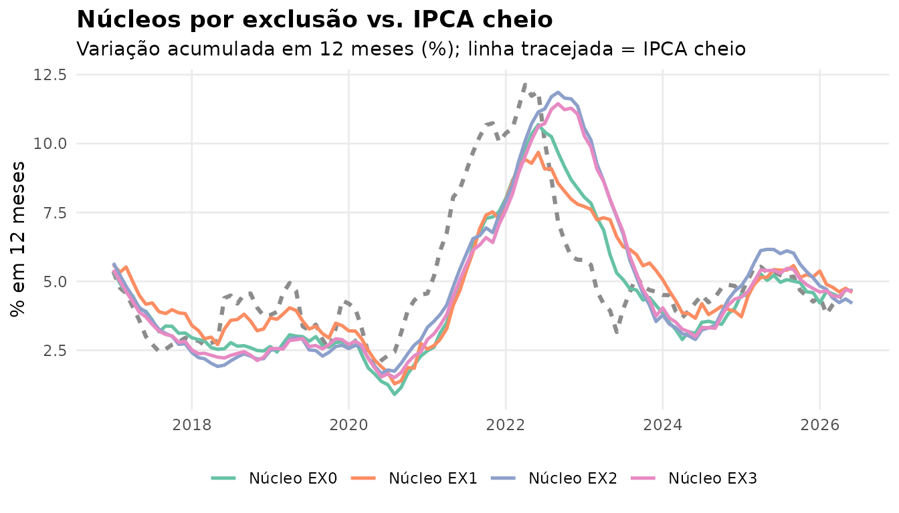
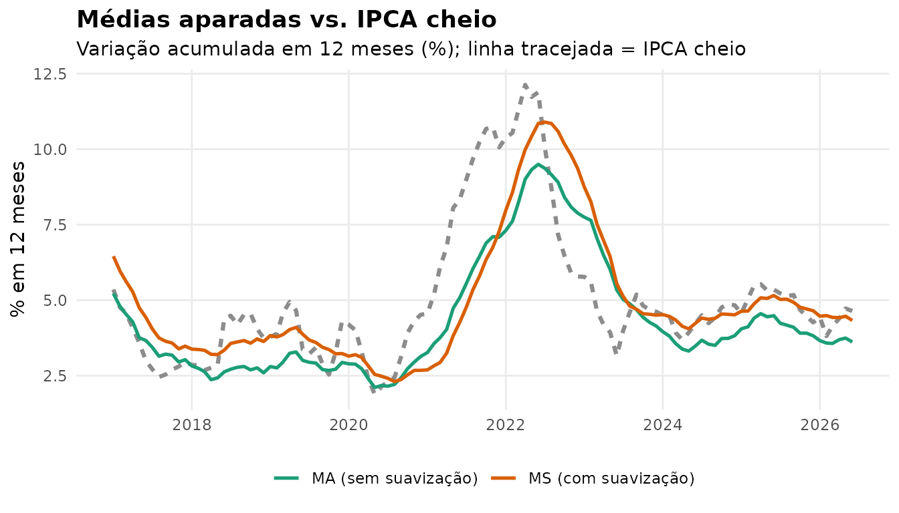
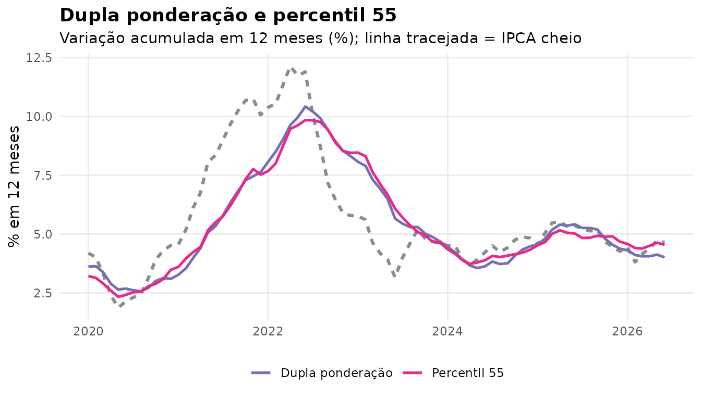
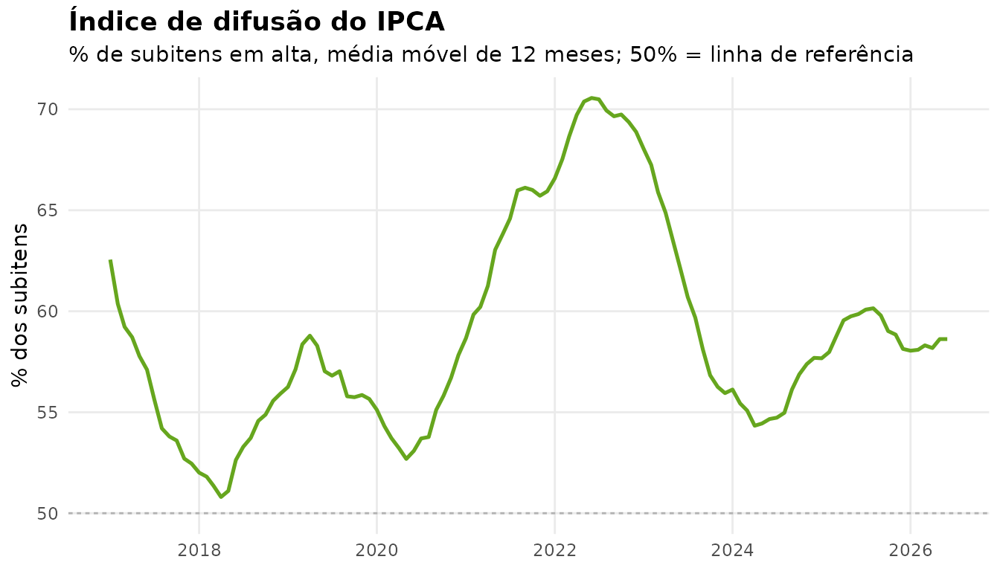
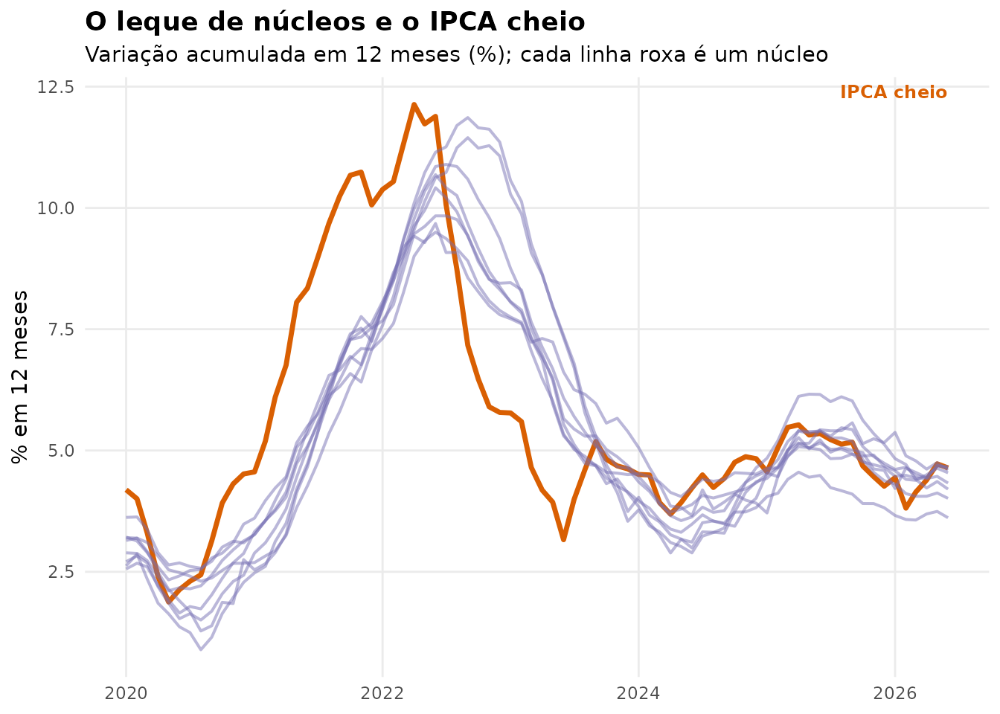

O nucleos calcula, de forma reprodutível, as séries
analíticas derivadas do IPCA publicadas pelo Banco Central do Brasil,
seguindo a metodologia consolidada na Nota Técnica 57 (dezembro de
2025). Este tutorial explica o que são os núcleos de inflação, mostra
como calculá-los com o pacote e visualiza os resultados com
ggplot2.
Por que núcleos?
A inflação cheia — a variação do IPCA que sai no noticiário — é um indicador ruidoso. Um único choque, como uma quebra de safra ou um reajuste de combustíveis, desloca o índice sem dizer muito sobre a tendência de preços que a política monetária persegue. Os núcleos de inflação filtram esse ruído, removendo ou reponderando os itens de comportamento atípico para revelar o sinal persistente.
Não há um único núcleo, e sim uma família, cada um com uma hipótese
diferente sobre onde está o ruído. O nucleos implementa
todos os do Banco Central.
Os dados
Toda a análise parte de get_ipca(), que coleta do
SIDRA/IBGE a variação mensal e o peso de cada componente do IPCA,
costurando automaticamente as cinco estruturas do índice vigentes desde
1991:
ipca <- get_ipca(inicio = "2015-01")Para que este tutorial rode sem depender da rede, usamos
ipca_exemplo, um recorte de 2015 a 2026 já incluído no
pacote — o resultado exato da chamada acima.
ipca <- ipca_exemplo
dplyr::glimpse(ipca)
#> Rows: 63,486
#> Columns: 7
#> $ date <date> 2015-01-01, 2015-01-01, 2015-01-01, 2015-01-01, 2015-01-01, …
#> $ pof <chr> "POF 2008-2009", "POF 2008-2009", "POF 2008-2009", "POF 2008-…
#> $ codigo <chr> "0", "1", "11", "1101", "1101002", "1101051", "1101052", "110…
#> $ nivel <chr> "Geral", "Grupo", "Subgrupo", "Item", "Subitem", "Subitem", "…
#> $ rotulo <chr> "Índice geral", "Alimentação e bebidas", "Alimentação no domi…
#> $ variacao <dbl> 1.24, 1.48, 1.74, 4.55, 0.57, 3.26, 2.76, 8.15, 17.95, NA, 0.…
#> $ peso <dbl> 100.0000, 24.9324, 16.1454, 0.9043, 0.5976, 0.0186, 0.0759, 0…Cada linha é um componente do IPCA num mês, identificado pelo código estrutural e pelo nível hierárquico (índice geral, grupo, subgrupo, item ou subitem).
Antes de calcular os núcleos, definimos dois auxiliares: um tema visual comum e uma função que acumula a variação mensal em doze meses — a forma usual de olhar inflação, que remove a sazonalidade.
tema_am <- theme_minimal(base_size = 11) +
theme(
legend.position = "bottom",
legend.title = element_blank(),
plot.title = element_text(face = "bold"),
panel.grid.minor = element_blank()
)
# Variacao acumulada em 12 meses, a partir da variacao mensal (%)
acumular_12m <- function(x) {
fator <- cumprod(1 + x / 100)
ac <- fator / dplyr::lag(fator, 12) - 1
ac * 100
}
# Media movel de 12 meses (para suavizar a difusao)
media_movel_12m <- function(x) {
as.numeric(stats::filter(x, rep(1 / 12, 12), sides = 1))
}
# IPCA cheio (indice geral), para comparar com os nucleos
ipca_cheio <- ipca |>
filter(codigo == "0") |>
transmute(date, serie = "IPCA cheio", variacao)Núcleos por exclusão
A ideia mais direta de núcleo é excluir de antemão os itens conhecidamente voláteis. O Banco Central publica quatro medidas por exclusão, do mais ao menos abrangente:
- EX0 remove a alimentação no domicílio;
- EX1 remove combustíveis e alimentos mais voláteis;
- EX2 e EX3 combinam núcleos de serviços, bens industriais e (no EX2) alimentação, definidos por critérios específicos da nota.
Todas são agregações simples: uma média das variações dos
itens que ficam, ponderada pelos pesos. A função agregar()
calcula qualquer uma delas — ou todas de uma vez.
exclusao <- bind_rows(
agregar(ipca, "Núcleo EX0"),
agregar(ipca, "Núcleo EX1"),
agregar(ipca, "Núcleo EX2"),
agregar(ipca, "Núcleo EX3")
)
exclusao_12m <- exclusao |>
arrange(serie, date) |>
group_by(serie) |>
mutate(acum = acumular_12m(variacao)) |>
ungroup() |>
filter(date >= as.Date("2017-01-01"))
cheio_12m <- ipca_cheio |>
mutate(acum = acumular_12m(variacao)) |>
filter(date >= as.Date("2017-01-01"))
ggplot(exclusao_12m, aes(date, acum, color = serie)) +
geom_line(data = cheio_12m, color = "grey55", linewidth = 1.1,
linetype = "22") +
geom_line(linewidth = 0.9) +
scale_color_brewer(palette = "Set2") +
labs(
title = "Núcleos por exclusão vs. IPCA cheio",
subtitle = "Variação acumulada em 12 meses (%); linha tracejada = IPCA cheio",
x = NULL, y = "% em 12 meses"
) +
tema_am
Núcleos por exclusão e IPCA cheio, variação acumulada em 12 meses.
Os núcleos são visivelmente mais suaves que a linha tracejada do IPCA cheio: ao remover os itens voláteis, eliminam boa parte dos solavancos de curto prazo.
Médias aparadas
Em vez de decidir de antemão o que excluir, as médias aparadas deixam os dados decidirem a cada mês. Ordenam-se os itens pela variação de preços e descartam-se as duas caudas — os 20% de menor e os 20% de maior variação, por peso —, tomando a média ponderada do miolo.
-
core_ma()faz isso sobre a variação do mês; -
core_ms()(com suavização) troca, antes de aparar, a variação de itens de reajuste infrequente — combustíveis, energia, cursos — pela sua média de doze meses, evitando que reajustes concentrados entrem e saiam do miolo.
aparadas <- bind_rows(
mutate(core_ma(ipca), serie = "MA (sem suavização)"),
mutate(core_ms(ipca), serie = "MS (com suavização)")
) |>
arrange(serie, date) |>
group_by(serie) |>
mutate(acum = acumular_12m(variacao)) |>
ungroup() |>
filter(date >= as.Date("2017-01-01"))
ggplot(aparadas, aes(date, acum, color = serie)) +
geom_line(data = cheio_12m, aes(color = NULL), color = "grey55",
linewidth = 1.1, linetype = "22") +
geom_line(linewidth = 0.9) +
scale_color_manual(values = c("MA (sem suavização)" = "#1B9E77",
"MS (com suavização)" = "#D95F02")) +
labs(
title = "Médias aparadas vs. IPCA cheio",
subtitle = "Variação acumulada em 12 meses (%); linha tracejada = IPCA cheio",
x = NULL, y = "% em 12 meses"
) +
tema_am
Núcleos de médias aparadas, variação acumulada em 12 meses.
Dupla ponderação e percentil 55
Duas medidas completam a família de núcleos:
-
Dupla ponderação (
core_dp()) mantém todos os itens, mas reduz o peso dos mais voláteis: cada peso original é dividido pelo desvio-padrão das variações do item numa janela de 48 meses. Itens instáveis pesam menos. -
Percentil 55 (
core_p55()) toma a variação do subitem que ocupa o 55º percentil da distribuição ponderada. Usa-se o percentil 55, e não a mediana, porque a distribuição de preços é assimétrica à direita e a mediana subestimaria a inflação.
dp_p55 <- bind_rows(
mutate(core_dp(ipca), serie = "Dupla ponderação"),
mutate(core_p55(ipca), serie = "Percentil 55")
) |>
arrange(serie, date) |>
group_by(serie) |>
mutate(acum = acumular_12m(variacao)) |>
ungroup() |>
filter(date >= as.Date("2020-01-01"))
ggplot(dp_p55, aes(date, acum, color = serie)) +
geom_line(data = filter(cheio_12m, date >= as.Date("2020-01-01")),
aes(color = NULL), color = "grey55", linewidth = 1.1,
linetype = "22") +
geom_line(linewidth = 0.9) +
scale_color_manual(values = c("Dupla ponderação" = "#7570B3",
"Percentil 55" = "#E7298A")) +
labs(
title = "Dupla ponderação e percentil 55",
subtitle = "Variação acumulada em 12 meses (%); linha tracejada = IPCA cheio",
x = NULL, y = "% em 12 meses"
) +
tema_am
Núcleos de dupla ponderação e percentil 55, acumulado em 12 meses.
Difusão
O índice de difusão (difusao()) mede
outra coisa: em vez do tamanho da inflação, a sua amplitude. É
o percentual de subitens do IPCA com variação positiva no mês. Uma
difusão alta indica pressão inflacionária espalhada por muitos itens —
um sinal de inflação persistente, ainda que o índice cheio esteja
contido.
difusao(ipca) |>
arrange(date) |>
mutate(media_movel = media_movel_12m(variacao)) |>
filter(date >= as.Date("2017-01-01")) |>
ggplot(aes(date, media_movel)) +
geom_hline(yintercept = 50, color = "grey70", linetype = "22") +
geom_line(color = "#66A61E", linewidth = 0.9) +
labs(
title = "Índice de difusão do IPCA",
subtitle = "% de subitens em alta, média móvel de 12 meses; 50% = linha de referência",
x = NULL, y = "% dos subitens"
) +
tema_am
Índice de difusão: percentual de subitens com alta no mês (média móvel de 12 meses).
Panorama: todos os núcleos
Por fim, uma leitura de conjuntura costuma olhar todos os núcleos ao mesmo tempo. Reunimos os núcleos de cálculo direto e os por exclusão num único painel.
todos <- bind_rows(
agregar(ipca, "Núcleo EX0") |> mutate(serie = "EX0"),
agregar(ipca, "Núcleo EX1") |> mutate(serie = "EX1"),
agregar(ipca, "Núcleo EX2") |> mutate(serie = "EX2"),
agregar(ipca, "Núcleo EX3") |> mutate(serie = "EX3"),
core_ma(ipca) |> mutate(serie = "MA"),
core_ms(ipca) |> mutate(serie = "MS"),
core_dp(ipca) |> mutate(serie = "DP"),
core_p55(ipca) |> mutate(serie = "P55")
) |>
arrange(serie, date) |>
group_by(serie) |>
mutate(acum = acumular_12m(variacao)) |>
ungroup() |>
filter(date >= as.Date("2020-01-01"))
ggplot(todos, aes(date, acum, group = serie)) +
geom_line(data = filter(cheio_12m, date >= as.Date("2020-01-01")),
aes(group = NULL), color = "#D95F02", linewidth = 1.2) +
geom_line(color = "#7570B3", alpha = 0.5, linewidth = 0.7) +
annotate("text", x = max(todos$date), y = max(cheio_12m$acum, na.rm = TRUE),
label = "IPCA cheio", color = "#D95F02", hjust = 1, vjust = -0.5,
fontface = "bold", size = 3.2) +
labs(
title = "O leque de núcleos e o IPCA cheio",
subtitle = "Variação acumulada em 12 meses (%); cada linha roxa é um núcleo",
x = NULL, y = "% em 12 meses"
) +
tema_am
Todos os núcleos vs. IPCA cheio, variação acumulada em 12 meses.
O IPCA cheio (laranja) oscila mais do que qualquer núcleo. Quando o cheio dispara e os núcleos permanecem contidos, o choque tende a ser transitório; quando os próprios núcleos sobem, a pressão é disseminada e persistente — é essa leitura que o conjunto de medidas permite.
Conferência com a série oficial
Todo número calculado pelo pacote pode ser conferido contra a série
oficial do Banco Central, publicada no Sistema Gerenciador de Séries
Temporais (SGS), com get_sgs(). Os códigos de cada série
estão em series_sgs.
oficial <- get_sgs(11426, inicio = "2020-01") # núcleo MA oficial
calculado <- core_ma(get_ipca(inicio = "2016-01"))
dplyr::inner_join(calculado, oficial, by = "date",
suffix = c("_calc", "_oficial"))No período posterior a 1999, as 22 séries reproduzem os valores
oficiais até a segunda casa decimal. Para os detalhes metodológicos e as
limitações do período de alta inflação, veja ?get_ipca.